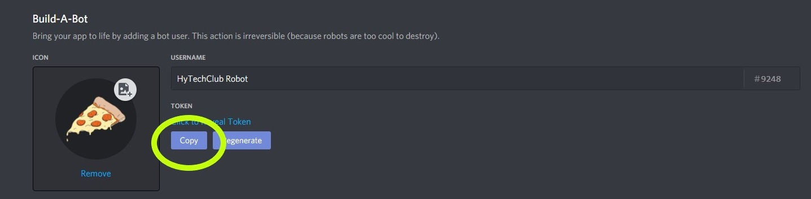
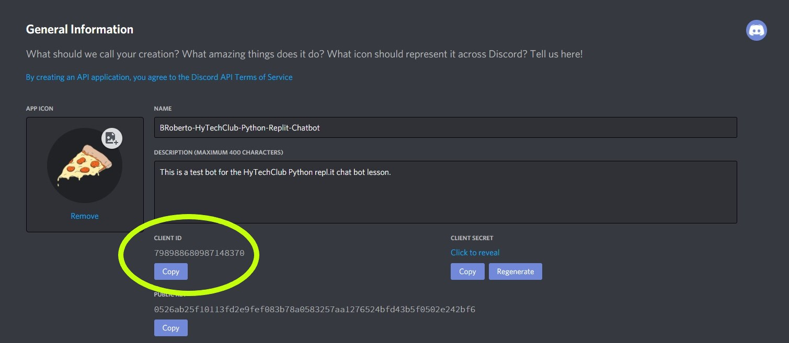
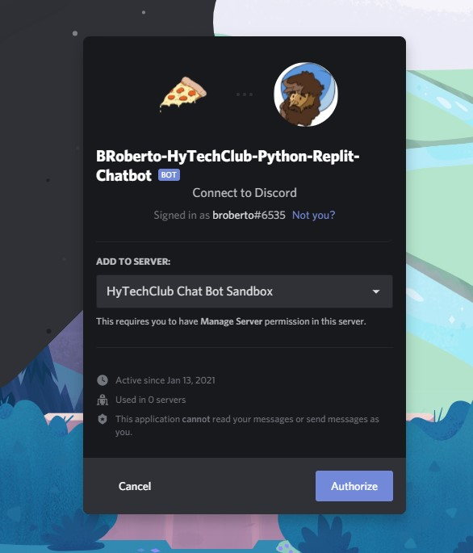

Discord Chat Bot
In this activity, create a Discord chat bot that can respond to messages in a Discord server. How the chat bot responds and what it says is for you to decide! The chat bot could respond to common phrases, or respond to commands with useful features like rolling dice, posting pictures, or acting as a calculator.
Setting Up
- Go to repl.it
- Log in
- Fork the HyTechClub-Robot-Start repl
- Make sure you have a Discord account so you can create and register your bot
Creating and Registering the Bot
The first step is to navigate to the Discord Developer Portal. You'll be prompted to log in, so use your Discord account that you created during set up.
- Make sure that you're on the Applications tab, and then click the blue "New Application" button in the top right
- The "Create An Application" dialog will appear, so give your appliction a name, then click Create
- You will be taken to your new application's General Information page. In the left-hand sidebar, click on "Bot"
- On the Bot page, click the "Add Bot" button
If you get an error about "Too many users share this name", then you will need to change your application's name on the General Information page first, then try again with the new name.
Saving the Bot Token in the .env File
Repl.it has a special feature that allows you to create environment variables for your Repl application. In your Repl, create a new file called .env. In this plaintext file, you can create environment variables by making key-value pairs like this:
ENVIRONMENT_VARIABLE_NAME=Value
ANOTHER_VARIABLE=anothervalue
Each environment variable should be on it's own line within this file.
- In the .env file, create a new variable called
DISCORD_BOT_SECRET - Back in the Discord Developer Portal, navigate to your bot's page, and find the "Copy" button for your bot's "Token" 
- Click the copy button and paste the Bot Token into your Repl's
.envfile
Code
DISCORD_BOT_SECRET=ABCD.EFGHIJKLMNOPQR.STUVWXYZ
Your secret value should exactly match the value that you copied from your discord bot page.
Adding the Bot to the Sandbox Server
- If you haven't already created a Discord account, you'll need to for this step
- Join the Hy-Tech Club Chat Bot Sandbox
- In the
#welcomechannel, click the beaker reaction on MEE6's message to give yourself the Bot Tester role Copy the "Client ID" from your Discord Application

Invite your bot to the Sandbox server by opening your bot's invite link in a browser. Use the following link format, but replace the
client_idurl parameter with your application's client idhttps://discord.com/oauth2/authorize?client_id=xxxxxx&scope=bot
Follow the prompts in the dialog to add your bot

Testing the Bot
With the starter code from the Repl, your Bot Token in the .env file, and your bot added to the Hy-Tech Club Bot Testing Sandbox, you should now be able to run your Repl and see your bot successfully log in! Click the Run button at the top of the repl and you should see output similar to the following, except the username should match the username that you gave your bot. Additionally, in the list of users for the Hy-Tech Club Bot Testing Sandbox, your bot should appear as online.
Logged in as: HyTechClub Robot#9248
Command prefix is: !
Using the discord.py Library
For the rest of the lesson, we will be using the discord.py library. Repl.it automatically handles downloading the library for you when you import it, thanks to the Poetry Package Manager. When you run your Repl, you will see output similar to the following:
Repl.it: Updating package configuration
--> python3 -m poetry install
Installing dependencies from lock file
Package operations: 2 installs, 2 updates, 0 removals
- Updating idna (2.10 -> 3.1)
- Updating chardet (4.0.0 -> 3.0.4)
- Installing discord.py (1.6.0)
- Installing discord (1.0.1)
You will want to reference the documentation for the discord.py library while following this code-along, and you will also need to look up features from this library when completing the challenges for this lesson, so keep it open in another tab for reference.
Review the Repl's Starting Code
Let's break down the starting code from the HyTechClub-Robot-Start repl. Take a look at the main.py file.
Imports and Initialization
from discord.ext.commands import Bot
import os
bot = Bot(command_prefix = "$")
This code imports the Bot class from the discord.ext.commands library, as well as the os package. Then, a new bot is created by calling the Bot constructor, providing a default command_prefix, and saving the result in the bot variable.
The on_ready Event
Next, the starter code defines an on_ready event handler. Event handlers allow you to write code that executes in response to something that happens, also known as events. You can view a reference of all of the events supported by the discord.py library here. In this code-along, we will focus on the on_ready and on_message events, but there are many other events your bot could handle.
@bot.event
async def on_ready():
print("Logged in as: {}".format(bot.user))
print("Command prefix is: {}".format(bot.command_prefix))
This code registers the on_ready event for the bot, with a simple implementation that prints the bot's username and tag, as well as the command prefix when the bot starts. This is helpful to verify that the bot was able to start successfully.
Note that the on_ready function is async, which means that the function is a coroutine. You don't need to understand all the details about coroutines - just know that making a function a codroutine allows it to be scheduled in an event loop. This allows your code to respond to real-time events.
All of the functions we create as event handlers must be defined as coroutines.
Starting the Bot
token = os.environ.get("DISCORD_BOT_SECRET")
bot.run(token)
This code reads the DISCORD_BOT_SECRET token you set up earlier as an environment variable (through .env file feature on Repl.it) using the os.environ dictionary. Then, it passes the token to the bot and runs it, which starts the bot and logs it in to Discord.
Responding to the on_message Event
The next step is to allow your bot to respond to messages in servers that it has joined. In order to accomplish this, you will use the @bot.event decorator. This decorator will take a function and add it to your bot as an "event handler". The event that the handler responds to is drawn from the function name, so the function on_message will respond to the on_message event.
- Define an async function called
on_message - Add the
@bot.eventdecorator above your newon_messagefunction - Add one parameter to your
on_messagefunction, calledmessage - For now, give your function an empty body, using the
passkeyword
Code
@bot.event
async def on_message(message):
pass
Limiting the Bot's Responses
The first thing your bot should do is not respond to other bots. With all the other students working on bots at the same time, things could get a bit crazy if all the bots would respond to each other, or even themselves! You will achieve this by using properties from discord.py's Message and User classes. Specifically, the message.author property, and the user.bot property will allow you to verify whether or not a particular message was sent by a bot.
- Remove the
passkeyword in youron_messagefunction - Add an
ifstatement inside theon_messagefunction - As the condition for the if statement, check properties of the
messageparameter:message.author.bot - Add the colon to denote the start of the
ifstatement body - On the next line, add an empty
return
Code
@bot.event
async def on_message(message):
if message.author.bot:
return
Logging Received Messages
Currently, the on_message event handler doesn't have any visible side effects, so it's not easy to test if it's working correctly. Let's add a log message so we can tell when the bot is handling messages.
- Under the if statement within the
on_messagefunction, add a print statement - Print a message that logs both the
message.authorandmessage.contentfrom the received message.
Code
print("Received message: {} > {}".format(message.author, message.content))
Adding the Ping Pong Response
So, the bot currently writes to your Repl's console, but the whole point of the chat bot is to send messages in the Discord server! Let's get the bot to respond to a simple prompt. When anyone says "ping", the bot should respond with "pong". Or, if you're feeling creative, add any other simple call-and-response you want, like "Marco", "Polo" or anything else you like.
- At the bottom of the
on_messageevent handler, add anotherifstatement - In the condition for the
ifstatement, check ifmessage.contentequals your desired prompt - In the body for the
if, respond to the prompt with your desired answer, using themessage.channel.sendmethod - Use the
awaitkeyword to wait for the bot to send the response
Test out your code by posting the message ping in the Discord server's #general channel. Your bot should respond, and probably some of your classmate's bots will as well! Additionally, you should see messages logged in the console for your Repl for every message sent in the channel.
Code
if message.content == "ping"
await message.channel.send("pong")
Adding More Prompts and Responses
Now, if you wanted to add more prompts and responses to the bot, you could add more hard-coded if statements to get the job done, but what if your bot needs to respond to hundreds of phrases? Or what if you need to add more prompts and responses on-the-fly? Dictionaries can solve this problem! Next, add a dictionary of prompts and responses and allow your bot to respond in even more ways.
- At the top of the main.py file, right after the line that creates the
botvariable, create a new variable calledprompts_and_responses - Set
prompts_and_responsesto a new dictionary{} - Add pairs of prompt and response strings to the
prompts_and_responsesdictionary, at least 3
Code
prompts_and_responses = {
"hello": "Hello there!",
"sup": "Hi, I'm HyTechClub Robot!",
"how are you?": "I am fine!"
}
Looping Over the Prompts and Response Dictionary
The prompts_and_responses dictionary can be used by the on_message event handler, which will make it much easier and faster to add new prompts and responses to your bot. By using the keys method of the dictionary, you can easily loop over all the prompts and search within the message content for those prompts.
- Find the bottom of the
on_messagefunction - Add a
forloop that saves each key fromprompts_and_messages.keys()in a variable calledprompt - Within the body of the
for, add anifstatement that checks if thepromptexistsinthemessage.content - If the
promptwas found, print a message that reports that thepromptwas found in themessage.content. - If the
promptwas found,message.channel.sendthe corresponding response from theprompts_and_responsesdict, andawaitit
Code
for prompt in prompts_and_responses.keys():
if prompt in message.content:
print("Found prompt: {} in message {}"
.format(prompt, message.content))
await message.channel.send(prompts_and_responses[prompt])
Testing the Bot (Again)
You can test your bot by writing messages that match your prompt in the #general channel in the Hy-Tech Club Chat Bot Sandbox server. If your bot shows as offline, it's possible that your Repl has timed out - if that's the case you may need to refresh your Repl and re-run it. Your bot should then show up as online again.
Final Code
from discord.ext.commands import Bot
import os
import random
bot = Bot(command_prefix="$")
prompts_and_responses = {
"hello": "Hello there!",
"sup": "Hi, I'm HyTechClub Robot!",
"how are you?": "I am fine!"
}
@bot.event
async def on_ready():
print("Logged in as: {}".format(bot.user))
print("Command prefix is: {}".format(bot.command_prefix))
@bot.event
async def on_message(message):
if message.author.bot:
return
print("Received message: {} > {}".format(message.author, message.content))
if message.content == "ping":
await message.channel.send("pong")
for prompt in prompts_and_responses.keys():
if prompt in message.content:
print("Found prompt: {} in message {}"
.format(prompt, message.content))
await message.channel.send(prompts_and_responses[prompt])
token = os.environ.get("DISCORD_BOT_SECRET")
bot.run(token)
Challenges
After the activity, start working on the Discord Bot Challenges.